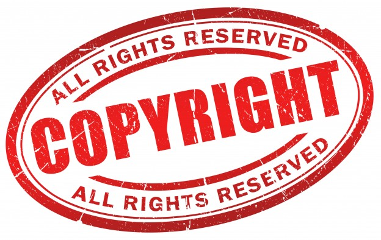

In bepaalde gevallen kan informatie beschermd worden door een beroep te doen op een wet die het auteursrecht beschermt. De bescherming kan alleen worden ingeroepen door de rechthebbende. Ook moet de informatie voldoen aan de eisen van de auteurswet. De Nederlandse Auteurswet bevat artikelen over het auteursrecht. De wet heeft niet alleen betrekking op teksten, (video)beelden, etc. maar ook op software. De rechten op databanken worden geregeld in het Databankenrecht. Wettelijke uitzonderingen daargelaten, is het kopiëren van software zonder toestemming van de rechthebbende een breuk van het auteursrecht. Ook het analyseren van software is in principe een als schending van het auteursrecht. Analyseren van software is in principe alleen toegestaan wanneer de software rechtmatig verkregen is en wanneer de analyse het doel heeft om de software te testen, fouten in de software te herstellen of om koppelingen met andere software tot stand te brengen. De Nederlandse Auteurswet geldt alleen in Nederland. Wel zijn de artikelen over software en andere digitale bestanden gebaseerd op de Europese Software Richtlijn (Richtlijn 91/250/EEG) en de Auteursrecht in de informatiemaatschappij Richtlijn (Richtlijn 2001/29/EG). Dat betekent dat alle lidstaten van de Europese Unie vergelijkbare wetgeving hebben. Voor landen buiten de Europese Unie geldt dat een auteursrechtrechthebbende een beroep kan doen op het auteursrecht van het betreffende land. Dit land moet wel aangesloten zijn bij de Berner Conventie (1886).
